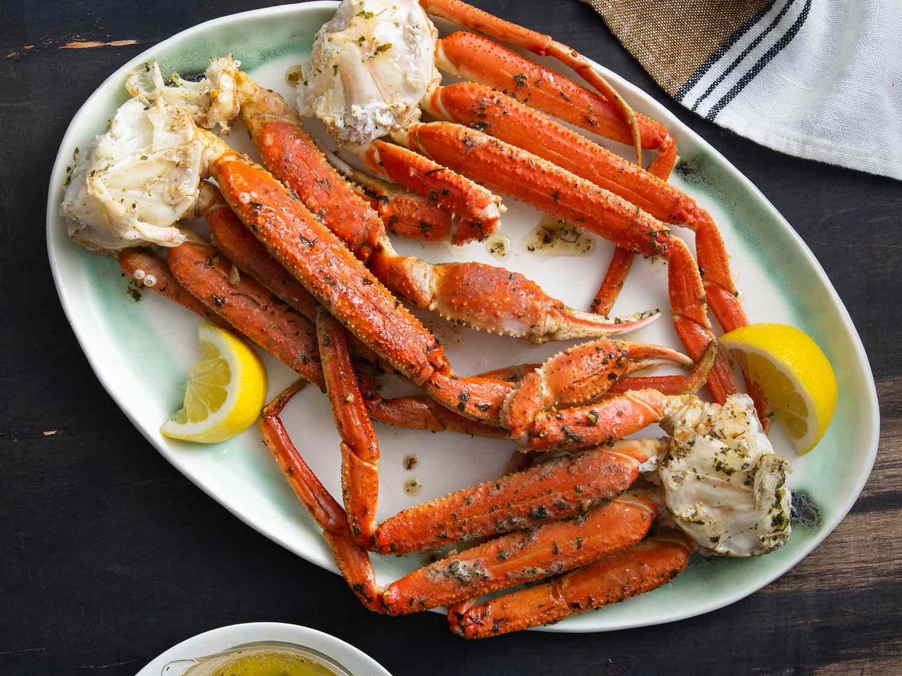

Home
Crab Legs Recipe

What are Crab legs
Crab legs are a seafood delicacy made up of the long,
meaty appendages of crabs:
Crab legs are a popular centerpiece for seafood feasts and
gourmet dinners. They can be prepared in a variety of ways,
and different types of crab legs have unique flavors and textures
that work well in different dishes.
Ingredients
- 1 lb snow crab clusters
- ¼ cup butter
- 1 clove minced garlic
- 1 ½ teaspoons dried parsley
- ¼ teaspoon freshly ground black peppe
- ⅛ teaspoon salt
steps
- Melt butter in a skillet over medium heat
- Add garlic and cook until translucent
- Stir in parsley, pepper, and salt
- Add crab legs to the skillet and toss to coat
- Simmer until heated through